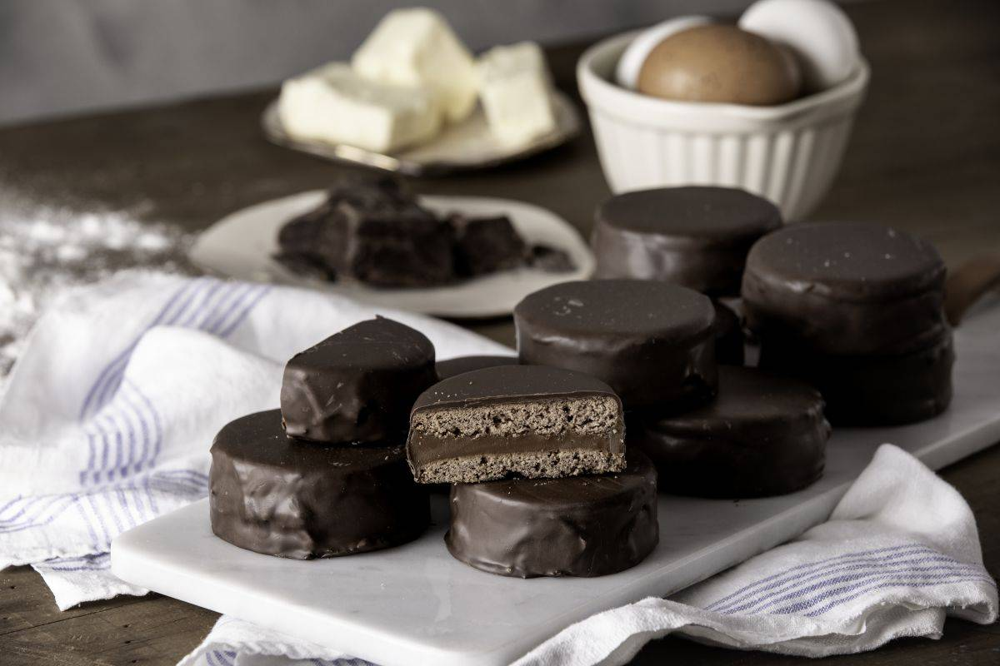

Alfajores

Description
This is a delicious recipe that comes from Argentina. It's made with two soft cookies
forming a sandwich with dulce de leche in the middle and everything is coated in chocolate.
It's one of my favorite foods in the world.
Ingredients
COATING
- Semi-sweet chocolate 300 grams
- Cocoa butter 40 grams
DOUGH
- Butter 200 grams
- Honey 50 grams
- Eggs 2
- Flour 400 grams
- Lemon zest 1
- Water 50 cc
- Corn Starch 100 grams
- Sugar 200 grams
- Baking soda 1 pinch
- Bitter cocoa 20 grams
FILLING
- Dulce de leche 500 grams
Steps
DOUGH
- Beat the softened butter with the sugar until white.
- Add the lemon zest, honey and eggs.
- Sift the flour, cocoa and cornstarch and add to the mixture.
- Dissolve the baking soda in the water, add and mix without kneading much.
- Wrap in plastic wrap and chill in the refrigerator.
- Stretch the dough 3 mm and cut discs 5 cm in diameter.
- Place them on a plate lightly greased with butter.
- Bake at 180 ° C for 10 minutes, cool and reserve.
ASSEMBLY
- Fill two discs with dulce de leche and join them together.
- Melt the previously grated cocoa butter in a bain-marie.
- Add the chopped and melted chocolate when melted.
- Coat the alfajores with the chocolate at 40°C and let the chocolate drain.
- Let stand 48 hours before consuming.
Recipe credits and image:
https://elgourmet.com/receta/alfajores-tradicionales-marplatenses
Back to recipes